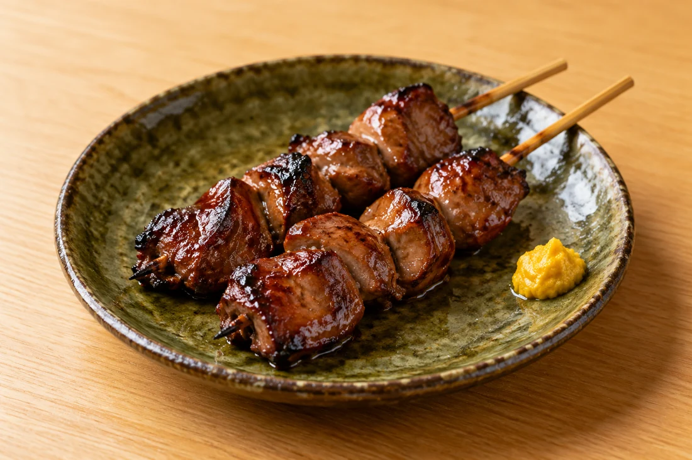
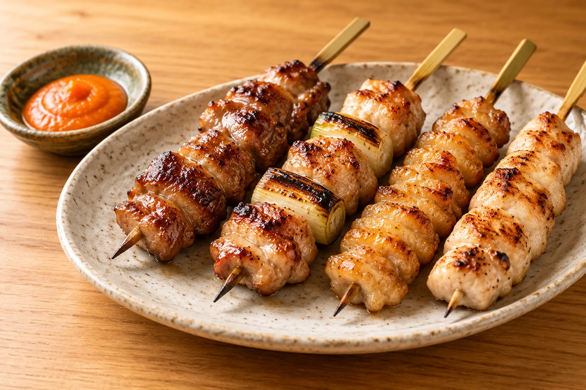
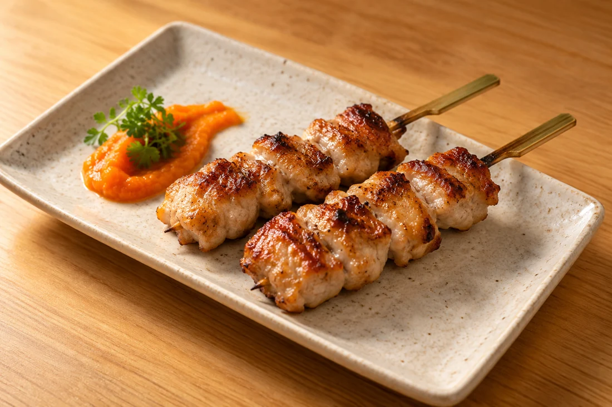
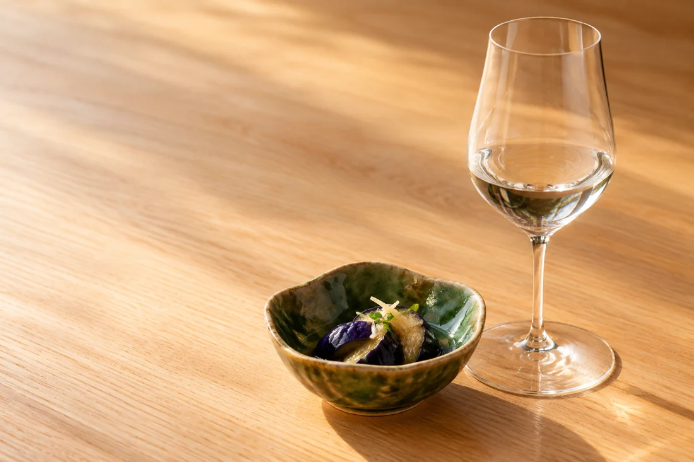

炭焼き
レバーの串焼き
香ばしい焼き目と、レバーのコク。
じっくり味わいたい一杯のおともに。

十色の楽しみ方 OUR TABLE
炭火焼きを中心に、ひと工夫のある一品料理。
そして、山形をはじめ県内外の日本酒。
仕事のあとのひと息にも、
久しぶりに会う人との夜ごはんにも。
おいしいものを少しずつ、気の向くままに。
今夜の「食べたい」を、十色で。

炭焼きのある夜まずは、炭焼き 01 / SUMIYAKI
鶏ももの串焼き
焼き目の香ばしさと、鶏のうまみ。
ひと口ずつ味わうたびに、会話も一杯も進む。
十色の夜は、まず炭焼きから。
串焼きに一品料理を合わせれば、
その日の気分で食卓が変わります。
料理と楽しむ一杯 03 / SAKE
炭焼きの香りに、すっきりとした日本酒。
一品の余韻に、ふくらみのある味わい。
山形をはじめ、県内外の日本酒を取り揃えています。
いつもの好みから、少し気になる味まで。
料理に合わせて、自分らしい一杯を。

ご来店の前に INFORMATION
お電話で、ご希望の日にち・時間・人数をお伝えください。お席の状況をご確認いただけます。
023-666-3701に電話する ↗その日の料理や価格、ご予算については店舗へお問い合わせください。お集まりのお食事も、まずはお電話でご相談ください。
営業日やお店からのお知らせは公式Instagramをご覧ください。お急ぎの場合はお電話でお問い合わせください。
公式Instagramを見る ↗店舗案内 04 / ACCESS
山形駅近く、香澄町。
珍味ビル1Fでお待ちしています。
炭焼酒場 十色 といろ
地図から経路をご確認いただけます。
炭焼きと、一品と、一杯と。
ご予約・お席・お料理のご相談はお電話で。
023-666-3701 アクセスを確認する